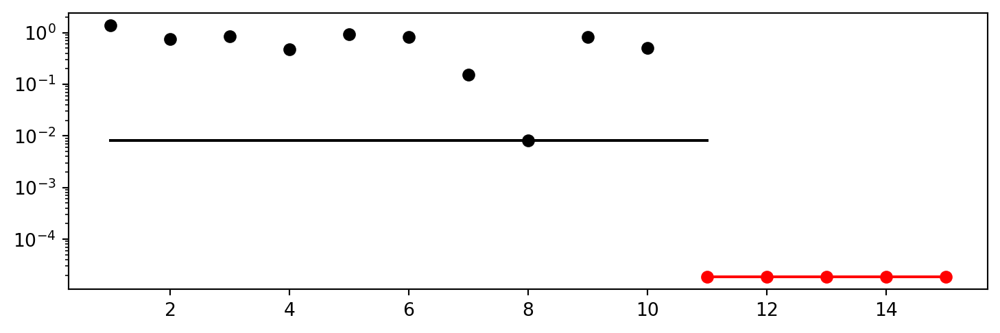
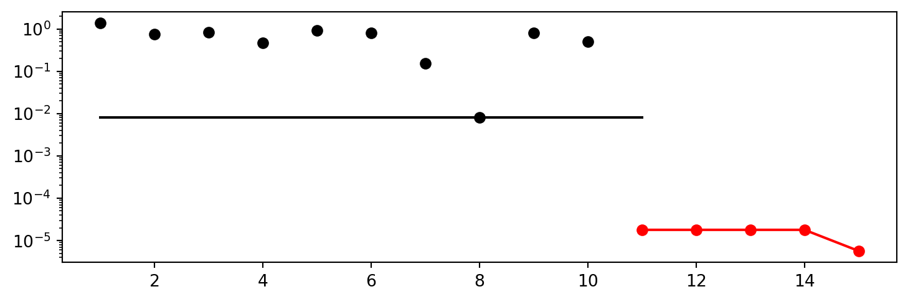
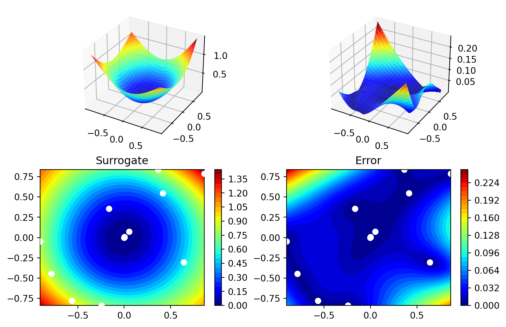
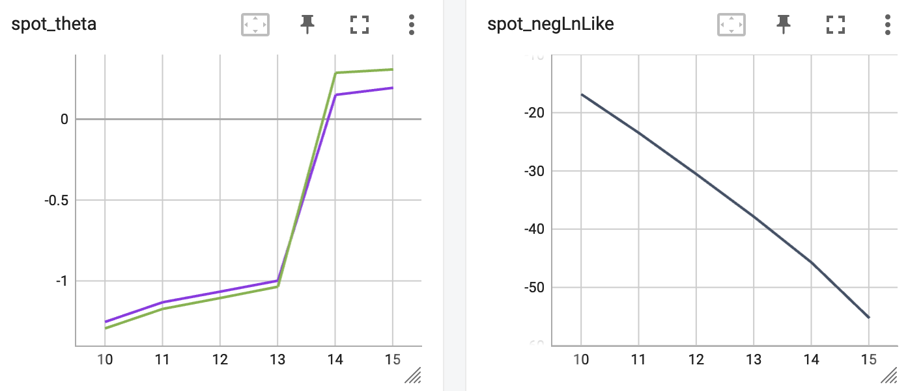

import numpy as np
from math import inf
from spotPython.fun.objectivefunctions import analytical
from spotPython.spot import spot3 Isotropic and Anisotropic Kriging
3.1 Example: Isotropic Spot Surrogate and the 2-dim Sphere Function
3.1.1 The Objective Function: 2-dim Sphere
- The
spotPythonpackage provides several classes of objective functions. - We will use an analytical objective function, i.e., a function that can be described by a (closed) formula: \[f(x, y) = x^2 + y^2\]
fun = analytical().fun_sphere
fun_control = {"sigma": 0,
"seed": 123}- The size of the
lowerbound vector determines the problem dimension. - Here we will use
np.array([-1, -1]), i.e., a two-dim function.
spot_2 = spot.Spot(fun=fun,
lower = np.array([-1, -1]),
upper = np.array([1, 1]))
spot_2.run()<spotPython.spot.spot.Spot at 0x1775dadd0>3.1.2 Results
spot_2.print_results()min y: 1.8750731199649933e-05
x0: 0.0015130475553084242
x1: 0.0040572673433020325[['x0', 0.0015130475553084242], ['x1', 0.0040572673433020325]]spot_2.plot_progress(log_y=True)
3.2 Example With Anisotropic Kriging
- The default parameter setting of
spotPython’s Kriging surrogate uses the samethetavalue for every dimension. - This is referred to as “using an isotropic kernel”.
- If different
thetavalues are used for each dimension, then an anisotropic kernel is used - To enable anisotropic models in
spotPython, the number ofthetavalues should be larger than one. - We can use
surrogate_control={"n_theta": 2}to enable this behavior (2is the problem dimension).
TensorBoard
Similar to the one-dimensional case, which was introduced in Section Section 1.7, we can use TensorBoard to monitor the progress of the optimization. We will use the same code, only the prefix is different:
from spotPython.utils.file import get_experiment_name
from spotPython.utils.init import fun_control_init
from spotPython.utils.file import get_spot_tensorboard_path
PREFIX = "03"
experiment_name = get_experiment_name(prefix=PREFIX)
print(experiment_name)
fun_control = fun_control_init(
spot_tensorboard_path=get_spot_tensorboard_path(experiment_name))03_bartz08-2_2023-07-10_00-19-49spot_2_anisotropic = spot.Spot(fun=fun,
lower = np.array([-1, -1]),
upper = np.array([1, 1]),
surrogate_control={"n_theta": 2},
fun_control=fun_control)
spot_2_anisotropic.run()<spotPython.spot.spot.Spot at 0x2b9b2d540>- The search progress of the optimization with the anisotropic model can be visualized:
spot_2_anisotropic.plot_progress(log_y=True)
spot_2_anisotropic.print_results()min y: 5.68261952864018e-06
x0: -0.002137037687426695
x1: -0.0010562620182313395[['x0', -0.002137037687426695], ['x1', -0.0010562620182313395]]spot_2_anisotropic.surrogate.plot()
3.2.1 Taking a Look at the theta Values
3.2.1.1 theta Values from the spot Model
- We can check, whether one or several
thetavalues were used. - The
thetavalues from the surrogate can be printed as follows:
spot_2_anisotropic.surrogate.thetaarray([0.16545225, 0.28999215])- Since the surrogate from the isotropic setting was stored as
spot_2, we can also take a look at thethetavalue from this model:
spot_2.surrogate.thetaarray([0.26287446])3.2.1.2 TensorBoard
Now we can start TensorBoard in the background with the following command:
tensorboard --logdir="./runs"We can access the TensorBoard web server with the following URL:
http://localhost:6006/The TensorBoard plot illustrates how spotPython can be used as a microscope for the internal mechanisms of the surrogate-based optimization process. Here, one important parameter, the learning rate \(\theta\) of the Kriging surrogate is plotted against the number of optimization steps.

3.3 Exercises
3.3.1 fun_branin
- Describe the function.
- The input dimension is
2. The search range is \(-5 \leq x_1 \leq 10\) and \(0 \leq x_2 \leq 15\).
- The input dimension is
- Compare the results from
spotPythonrun a) with isotropic and b) anisotropic surrogate models. - Modify the termination criterion: instead of the number of evaluations (which is specified via
fun_evals), the time should be used as the termination criterion. This can be done as follows (max_time=1specifies a run time of one minute):
fun_evals=inf,
max_time=1,3.3.2 fun_sin_cos
- Describe the function.
- The input dimension is
2. The search range is \(-2\pi \leq x_1 \leq 2\pi\) and \(-2\pi \leq x_2 \leq 2\pi\).
- The input dimension is
- Compare the results from
spotPythonrun a) with isotropic and b) anisotropic surrogate models. - Modify the termination criterion (
max_timeinstead offun_evals) as described forfun_branin.
3.3.3 fun_runge
- Describe the function.
- The input dimension is
2. The search range is \(-5 \leq x_1 \leq 5\) and \(-5 \leq x_2 \leq 5\).
- The input dimension is
- Compare the results from
spotPythonrun a) with isotropic and b) anisotropic surrogate models. - Modify the termination criterion (
max_timeinstead offun_evals) as described forfun_branin.
3.3.4 fun_wingwt
- Describe the function.
- The input dimension is
10. The search ranges are between 0 and 1 (values are mapped internally to their natural bounds).
- The input dimension is
- Compare the results from
spotPythonrun a) with isotropic and b) anisotropic surrogate models. - Modify the termination criterion (
max_timeinstead offun_evals) as described forfun_branin.